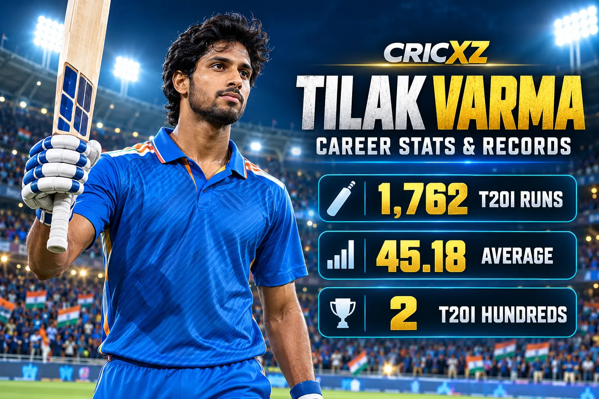
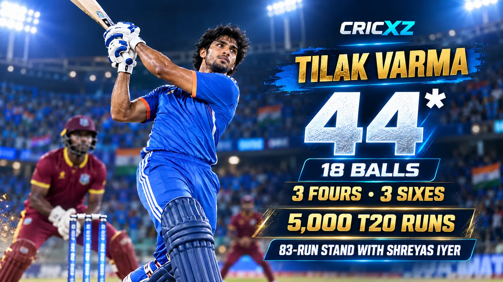

ODI Career
- Matches
- 5
- Innings
- 4
- Runs
- 68
- Batting average
- 22.67
- Strike rate
- 57.15
- Highest score
- 52
- Hundreds / Fifties
- 0 / 1

Tilak Varma is one of India's leading young T20 batters. His calm middle-order game, clean power and ability to finish innings have produced two T20I hundreds, an average above 45 and more than 5,000 career T20 runs.
Career statistics are current through the second India–West Indies T20I on 9 October 2026.
Tilak remains an active player, so these figures may change after his next appearance.
Tilak progressed from Hyderabad age-group cricket and India's Under-19 system to become a key Mumbai Indians batter. His ability to absorb pressure, rotate strike and accelerate against pace or spin quickly earned him an international role.

Tilak struck an unbeaten 44 from 18 balls against West Indies in Ranchi on 9 October 2026. His innings featured three fours and three sixes and came at a strike rate of 244.44.
He and Shreyas Iyer added 83 runs from 32 balls to lift India to 249/5. Although West Indies completed a record chase, Tilak's late acceleration reinforced his value as a flexible finisher. During the innings, he also passed 5,000 career runs in T20 cricket.
Tilak's international breakthrough accelerated in November 2024 when he scored an unbeaten 107 at Centurion and followed it with 120 not out at Johannesburg. The consecutive hundreds demonstrated both his range and his ability to control high-pressure T20 innings.
His unbeaten 120 remains his T20I high score. The innings also formed part of an unbeaten 210-run partnership with Sanju Samson, one of India's defining T20 batting displays.
15 September 2023
Made his ODI debut against Bangladesh in Colombo.
3 August 2023
Made his T20I debut against West Indies at Tarouba.
27 March 2022
Made his IPL debut for Mumbai Indians against Delhi Capitals.
Built an elite early-career record at an average above 45.
Scored consecutive international hundreds against South Africa in 2024.
Produced his career-best score in Johannesburg.
Shared an unbeaten stand with Sanju Samson against South Africa.
Passed the landmark during his unbeaten 44 in Ranchi.
Finished India's innings against Pakistan and helped secure men's cricket gold.
Scored an unbeaten 51 from 22 balls in India's 2026 final victory over Pakistan.
Part of India's successful title defence on home soil.
Became a central Mumbai Indians middle-order batter and registered an IPL hundred.
Established himself among the leading batters in the international format.
Career statistics and recent-match details were checked on 10 October 2026.
Read the second-T20I match report from Ranchi, revisit India's Asian Games gold-medal victory, or browse all CricXZ player profiles.